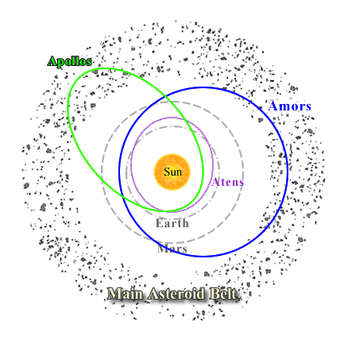

Asteroids whose orbits bring them relatively close to the Earth (perihelon distances of less than 1.3 AU), are known, not surprisingly, as Near Earth Asteroids (NEAs). Alternatively called ‘Near Earth Objects’ (as some of them are thought to be the nuclei of extinct comets rather than asteroids), the majority of NEAs originate in the main asteroid belt and are perturbed inward through either collisions between asteroids or the gravitational influence of Jupiter.
There are three main types of NEA:
- Aten Asteroids – Earth crossing asteroids with semi-major axes smaller than 1 AU
- Apollo Asteroids – Earth crossing asteroids with semi-major axes larger than 1 AU
- Amor Asteroids – Earth approaching asteroids with orbits that lie between the Earth and Mars

Near Earth Asteroids have orbits which bring them relatively close to the Earth. The 3 main types are distinguished by their orbital characteristics which are illustrated here.
With expected lifetimes of around 10 million years, the ultimate fate of NEAs may be gravitational ejection from the Solar System or collision with one of the terrestrial planets. In particular, NEAs that come especially close to the Earth and which are large enough to threaten civilisation are labelled Potentially Hazardous Asteroids. Past collisions with such objects is evident on local (the Tunguska event) and global (the mass extinction at the Cretaceous-Tertiary boundary) scales. There is no doubt that the Earth will encounter another of these objects in the future, and several monitoring programs have been established to warn of possible danger.